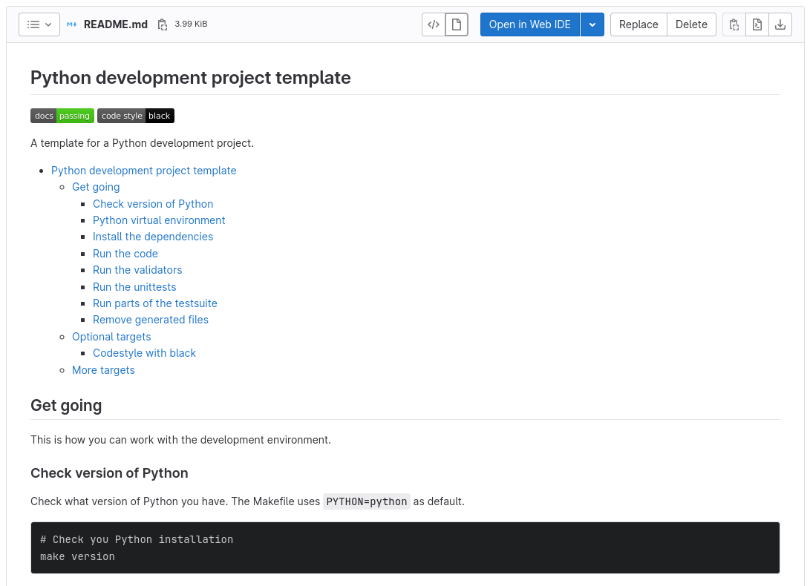
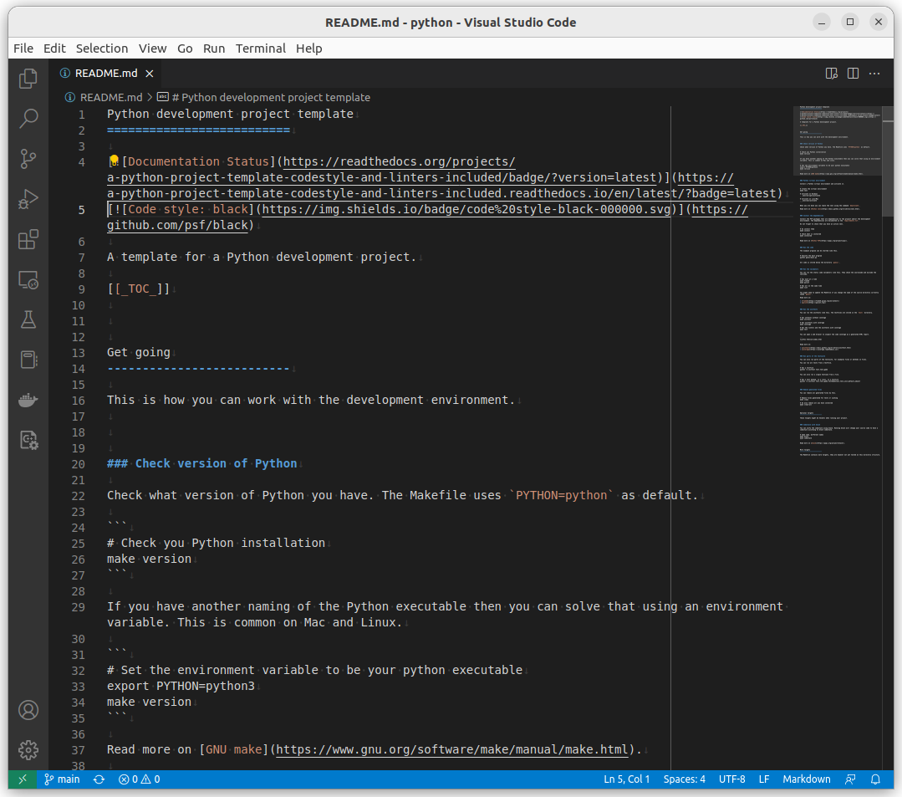
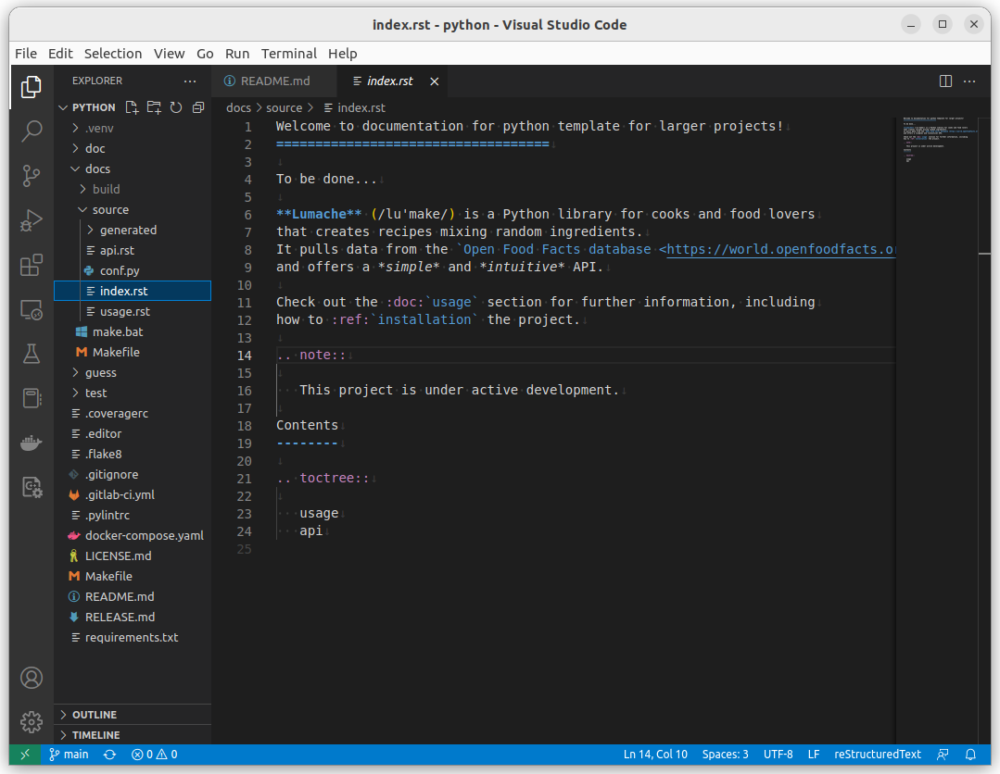
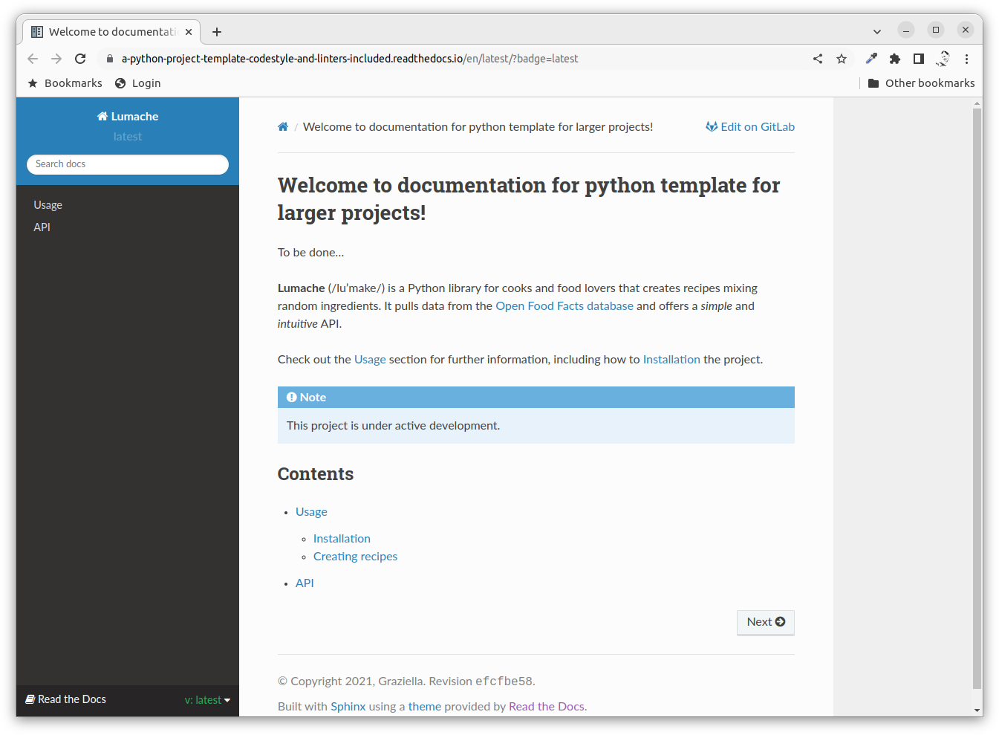
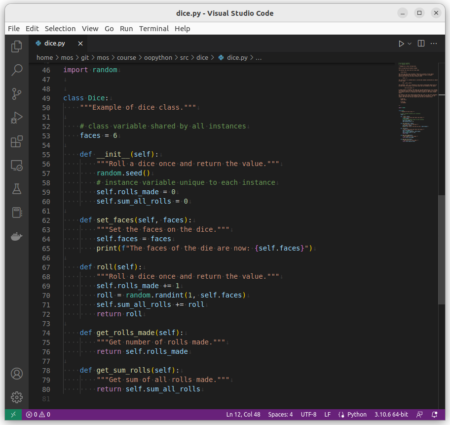
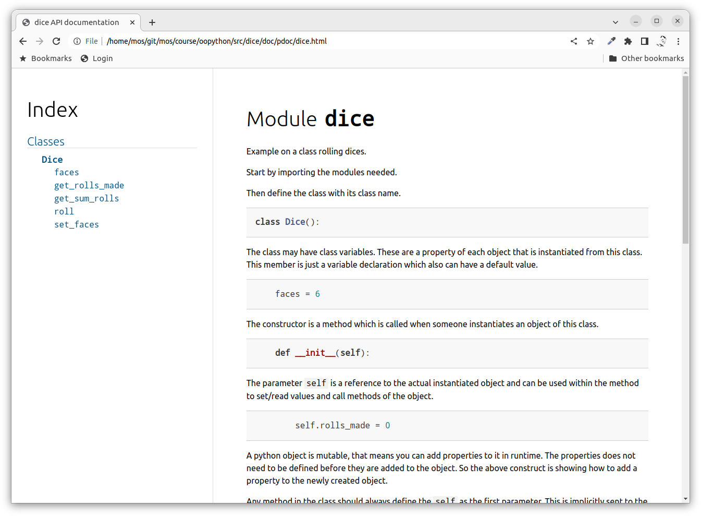
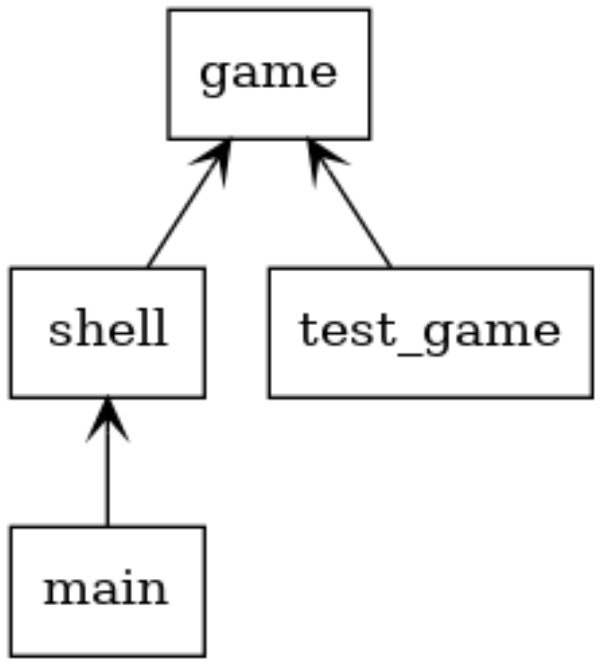
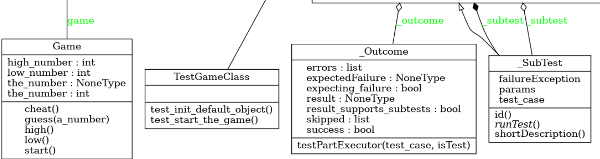
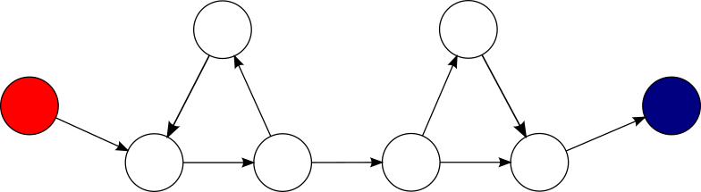
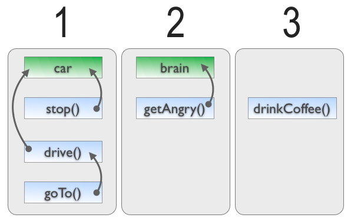

<!doctype html>
<html class="theme-5">
<meta charset="utf-8" />
<link href="../html-slideshow.bundle.min.css" rel="stylesheet" />
<link href="../style.css" rel="stylesheet" />
<script src="https://dbwebb.se/cdn/js/html-slideshow_v1.1.0.bundle.min.js"></script>

<title>Cleaner code</title>

<script data-role="slide" type="text/html" data-markdown class="titlepage center">
# Cleaner code
## TDD, documentation and cleaner code
### Mikael Roos
</script>

<!--
* Remove parts of the code quality, perhaps keep the five C's
* Balance with the next slideshow of clean-code metrics
-->

<script data-role="slide" data-markdown type="text/html">
# Agenda

* Test driven development
* Documentation
* Five C's to cleaner code

</script>


<script data-role="slide" type="text/html" data-markdown class="titlepage center">
# Test driven development
</script>


<script data-role="slide" type="text/html" data-markdown>
# Test-driven development

> Write your unit tests before you write the code.

> The code you write becomes testable.

> Your test suite becomes complete.

</script>


<script data-role="slide" type="text/html" data-markdown>
# The process

1. Write a unit test
1. Execute the test case and watch it fail
1. Write the smallest amount of code you possible can, to make the test case pass
1. Watch the test case pass
1. Refactor your code (while passing all tests)
1. Repeat

</script>


<script data-role="slide" type="text/html" data-markdown class="center">
<figure>

<figcaption>A graphical representation of the test-driven development lifecycle.</figcaption>
</figure>

</script>


<script data-role="slide" type="text/html" data-markdown>
# Principles usable in TDD

* Keep it simple, stupid (KISS)
* You aren't gonna need it (YAGNI)
* Fake it till you make it

</script>


<script data-role="slide" type="text/html" data-markdown>
# Additional philosophies

* Fix things early
* Never leave technical debt
* Heard of the broken window theory?

</script>


<script data-role="slide" type="text/html" data-markdown class="titlepage center">
# Documentation
</script>


<script data-role="slide" data-markdown type="text/html">
# Docs is?

* Cash is King
* Code is King
* Documentation is...?

</script>


<script data-role="slide" data-markdown type="text/html">
# Before or after?

> At first we need to understand the code to be built, create sketches.

> After the code is written we need to understand how it was built.

* Analysis & design (before)
    * Technical reports
    * Architecture
    * UML diagrams

</script>


<script data-role="slide" data-markdown type="text/html">
# Before or after?

> At first we need to understand the code to be built, create sketches.

> After the code is written we need to understand how it was built.

* Documentation (after)
    * Architecture
    * UML diagrams
    * Code documentation

</script>


<script data-role="slide" data-markdown type="text/html">
# Project documentation

* README.md
* CHANGELOG.md
* CONTRIBUTE.md
* LICENSE.md
* All included in the repo

</script>


<script data-role="slide" data-markdown type="text/html">
# README.md

* First point of entry to a project
* Describe the project
* How to install, setup and configure
* How to get going as a end user
* How to get going as a developer
* Frequent asked questions

</script>


<script data-role="slide" type="text/html" data-markdown class="center">
<figure>

<figcaption>A README.md for a project.</figcaption>
</figure>

</script>


<script data-role="slide" type="text/html" data-markdown class="center">
<figure>

<figcaption>Write README.md using Markdown.</figcaption>
</figure>

</script>


<script data-role="slide" data-markdown type="text/html">
# Docs in repo

* Continuous Documentation Deployment
* Add user/developer documentation to the repo
* `docs/`
* Integrate with a service like "ReadTheDocs"
* On each commit, your documentation is rebuilt from the source in your repo
* Or build locally

</script>


<script data-role="slide" data-markdown type="text/html">
# Read the docs

```
$ tree docs
docs
├── Makefile
├── build
├── make.bat
└── source
    ├── api.rst
    ├── conf.py
    ├── generated
    ├── index.rst
    └── usage.rst
```

</script>


<script data-role="slide" type="text/html" data-markdown class="center">
<figure>

<figcaption>Write docs using the format reStructuredText.</figcaption>
</figure>
</script>


<script data-role="slide" type="text/html" data-markdown class="center">
<figure>

<figcaption>Publish to ReadTheDocs on each commit.</figcaption>
</figure>
</script>


<script data-role="slide" data-markdown type="text/html">
# Docstring after

* PEP 257 - Docstring Conventions
* Add docstrings to code
* Lint that the docstrings are ok
* Generate documentation from docstrings

<p class="footnote">https://peps.python.org/pep-0257/</p>

</script>


<script data-role="slide" data-markdown type="text/html">
# pdoc

* From docstrings to HTML

```
pdoc --force --html --output-dir doc/pdoc *.py 
# or
make pdoc
```

<p class="footnote">https://pdoc.dev/</p>

</script>


<script data-role="slide" type="text/html" data-markdown class="center">
<figure>

<figcaption>Source code with docstrings.</figcaption>
</figure>
</script>


<script data-role="slide" type="text/html" data-markdown class="center">
<figure>

<figcaption>Generated HTML documentation using pdoc.</figcaption>
</figure>
</script>


<script data-role="slide" data-markdown type="text/html">
# UML after

* Generate class diagram and package diagrams from source code

```
pyreverse *.py -a1 -s1  
# or
make pyreverse
```

```
dot -Tpng classes.dot -o doc/pyreverse/classes.png   
dot -Tpng packages.dot -o doc/pyreverse/packages.png 
```

</script>


<script data-role="slide" type="text/html" data-markdown class="center">
<figure>

<figcaption>Generated UML package diagram.</figcaption>
</figure>
</script>


<script data-role="slide" type="text/html" data-markdown class="center">
<figure>

<figcaption>Generated UML class diagram.</figcaption>
</figure>
</script>


<script data-role="slide" data-markdown type="text/html">
# Automate it

* Automate the documentation to make it easy
* Apply TDD to documentation, documentation driven development
* Apply "Continuous Documentation Deployment"

```
make doc
```

</script>


<script data-role="slide" type="text/html" data-markdown class="titlepage center">
# Devops
</script>


<script data-role="slide" type="text/html" data-markdown>
# Devops

* What can be automated on each pushed commit?
* What if someone could do...
    * Clone the code
    * Create the venv, activate it
    * make install
    * make codestyle (black)
    * make lint (pylint, flake8)
    * make unittest
    * make coverage (and show off coverage)
    * make doc (and publish it)
* Bundle all above as
    * `make install test doc`

</script>


<script data-role="slide" type="text/html" data-markdown class="titlepage center">
# Good and clean code
</script>


<script data-role="slide" data-markdown type="text/html">
# Design guidelines

A few guidelines to reach cleaner code.

* Encapsulation
* Separation of concerns
* Information hiding
* Single responsibility
* Dependency inversion principle

</script>


<script data-role="slide" data-markdown type="text/html">
# Encapsulation

* Layered designs
    * presentation layer, business logic layer
    * data access layer, persistence layer
* Encapsulate data inside a section of code having a well-defined interface
* Bundling of data with the methods that operate on that data
* Restricting of direct access to some of an object's components

<p class="footnote">https://en.wikipedia.org/wiki/Encapsulation_(computer_programming)</p>

</script>


<script data-role="slide" data-markdown type="text/html">
# Separation of concerns

* Separation of concerns (SoC)
* A design principle for separating a computer program into distinct sections
* Each section addresses a separate concern
* A program that embodies SoC is called a modular program
* SoC can be achieved by encapsulation

<p class="footnote">https://en.wikipedia.org/wiki/Separation_of_concerns</p>

</script>


<script data-role="slide" data-markdown type="text/html">
# Information hiding

* Encapsulation is a means of information hiding
* The ability to prevent certain aspects of a class or component from being accessible to its clients
* Provide a stable interface
    * Least likely to change
* Protect the implementation details
    * More likely to change
* When a design decision changes, keep the interface and modify the implementation and the application is not affected

<p class="footnote">https://en.wikipedia.org/wiki/Information_hiding</p>

</script>


<script data-role="slide" data-markdown type="text/html">
# Single responsibility

* Each class/module should have a single responsibility
* Do just one thing and do it good
* When describing the class, it should be possible in one sentence without using "AND"

> "A class should have only one reason to change"

<p class="footnote">https://en.wikipedia.org/wiki/Single-responsibility_principle</p>

</script>


<script data-role="slide" data-markdown type="text/html">
# Dependency inversion principle

* The principle is a specific methodology for loosely coupling software modules

* High-level modules should not import anything from low-level modules
* Depend on abstractions (interfaces)

* A DiceHand can be injected with the Dice object (loose coupling, dependency injection)
* A DiceHand should not create the Dice object itself (hard coupling)

<p class="footnote">https://en.wikipedia.org/wiki/Dependency_inversion_principle<br>https://en.wikipedia.org/wiki/Dependency_injection</p>

</script>


<script data-role="slide" data-markdown type="text/html">
# The five C:s

A few guidelines to reach cleaner code.

* Codestyle
* Coverage
* Complexity
* Cohesion
* Coupling

</script>


<script data-role="slide" data-markdown type="text/html">
# Cyclomatic complexity

* Cyclomatic complexity is a software metric used to indicate the complexity of a program
* Quantitative measure of the number of linearly independent paths through a program's source code
* If the source code contains no control flow statements (conditionals or decision points), the complexity would be 1

<p class="footnote">https://en.wikipedia.org/wiki/Cyclomatic_complexity</p>

</script>


<script data-role="slide" type="text/html" data-markdown class="center">
# Complexity by graph

<figure>

<figcaption>Cyclomatic complexity is computed using the control flow graph of the program: the nodes of the graph correspond to indivisible groups of commands of a program, and a directed edge connects two nodes if the second command might be executed immediately after the first command. CC=3</figcaption>
</figure>

</script>


<script data-role="slide" type="text/html" data-markdown class="center">
# CC = 1

```
1   function example() {
        fiddle();
        fiddle();
        fiddle();
        return true;
    }
```

<p class="footnote">No decision points. Cyclomatic complexity = 1.</p>

</script>


<script data-role="slide" type="text/html" data-markdown class="center">
# CC = 6

```
1   function example() {
2       if ($a == $b) {
3           if ($a1 == $b1) {
                fiddle();
4           } elseif ($a2 == $b2) {
                fiddle();
            } else {
                fiddle();
            }
5       } elseif ($c == $d) {
6           while ($c == $d) {
                fiddle();
            }
        } else {
```

<p class="footnote">6 decision points. Cyclomatic complexity = 1+5.</p>

</script>


<script data-role="slide" data-markdown type="text/html">
# CC guideline

> "Cyclomatic Complexity of a method should not exceed 10."

> "Split into smaller method whenever the cyclomatic complexity of the module exceeded 10."

> "For each method, either limit cyclomatic complexity to [the agreed-upon limit] or provide a written explanation of why the limit was exceeded."

* High CC makes code harder to test

</script>


<script data-role="slide" data-markdown type="text/html">
# Cohesion

* Degree to which the elements inside a module belong together
* A cohesive class performs one feature while a non-cohesive class performs two or more features.

> "The ideal value of this metric is 1 (high cohesion) meaning a class has only one responsibility (good) and value X means that a class has probably X responsibilities (bad)."

* LCOM (Lack of Cohesive Methods)

<p class="footnote">https://en.wikipedia.org/wiki/Cohesion_(computer_science)</p>

</script>


<script data-role="slide" type="text/html" data-markdown class="center">
# LCOM

<figure>

<figcaption>Dependency graph on the class relationships provides the value for LCOM.</figcaption>
</figure>

<p class="footnote">https://softwareengineering.stackexchange.com/questions/151004/are-there-metrics-for-cohesion-and-coupling</p>

</script>


<script data-role="slide" data-markdown type="text/html">
# Coupling

* Degree of interdependence between software modules; a measure of how closely connected two classes are
* The strength of the relationships between classes

> "Generally, loose coupled classes and components are preferable as the higher your coupling, the higher are the chances that a class breaks or requires adaption because of changes in classes that it depends on."

* Dependency injection gives loose coupling

<p class="footnote">https://en.wikipedia.org/wiki/Coupling_(computer_programming)<br>https://en.wikipedia.org/wiki/Loose_coupling</p>

</script>


<script data-role="slide" type="text/html" data-markdown>
# Low coupling, high cohesion

> "**Low coupling** is often a sign of a well-structured computer system and a good design, and when combined with<br>**high cohesion** it supports the general goals of high readability and maintainability."

</script>


<script data-role="slide" data-markdown type="text/html">
# Good code?

> "Good and clean code should be readable and easy to maintain."

<p class="footnote">Lets stay with that definition for the time beeing, until we learn more on the topic of good and clean code.</p>

</script>


<script data-role="slide" type="text/html" data-markdown>
# Summary
</script>
    

<script data-role="slide" type="text/html" data-markdown class="titlepage center">
# The End
</script>


<script data-role="slide" data-markdown type="text/html">
</script>
